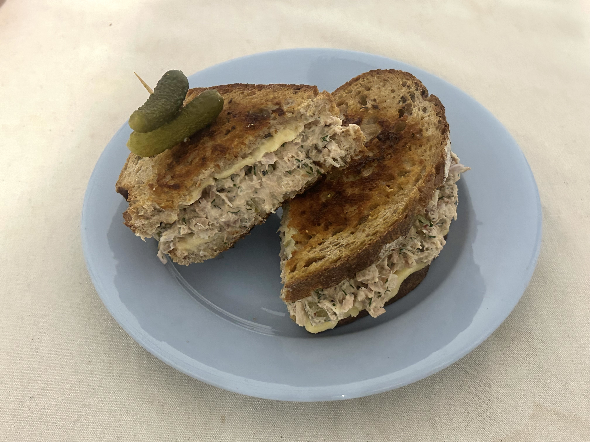

What Makes the Perfect Melt?
It’s more than just bread, cheese, and tuna.
Our ideal tuna melt is crispy bread, cold tuna, and semi-melted cheese...Discover how texture, flavor balance, and unique twists create the ultimate tuna melt experience.
Our Rating Criteria
Tuna Quality
Fresh, flaky, and perfectly seasoned tuna is a must.
Bread Choice
Griddled rye, challah, or sourdough that’s toasted to perfection.
Cheese Melt
From sharp cheddar, gooey gruyere, to classic american.
Extras
Pickles, sides, and creative additions for an unforgettable bite.
Our Fish Rating System
We rate each dish based on several key factors, giving it a score between 1 and 5 fish. Here's what each rating means:
Presented fish and cheese on bread. You did it!
Fresh or fishy? If it's tasty it gets two!
Balance? If the ratio is harmonious, you get three fish!
Worth Every Penny. This is a tuna melt that is worth the price or is a steal!
The Ultimate Experience. From flawless sides to impeccable service, and a memorable atmosphere that brings the dish to a whole new level.
Current Perfect Catch

Our current top-rated tuna melt is from S&P Lunch.
Its griddled rye bread and perfectly melted cheese make it a standout dish worth savoring. A true New York favorite!